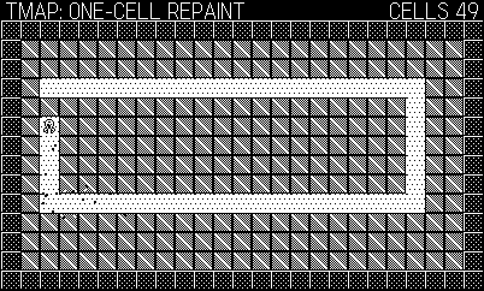
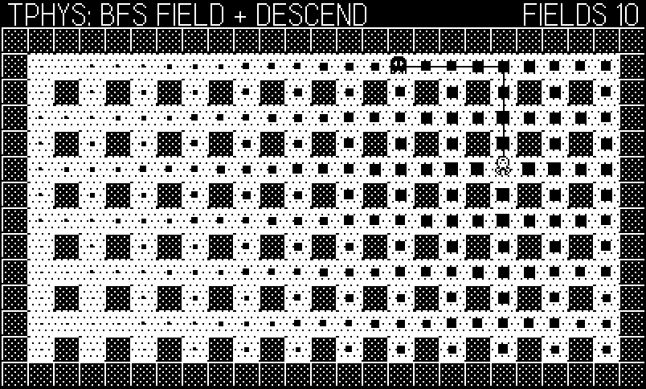
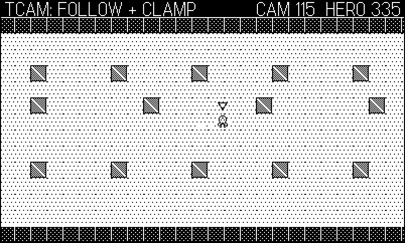
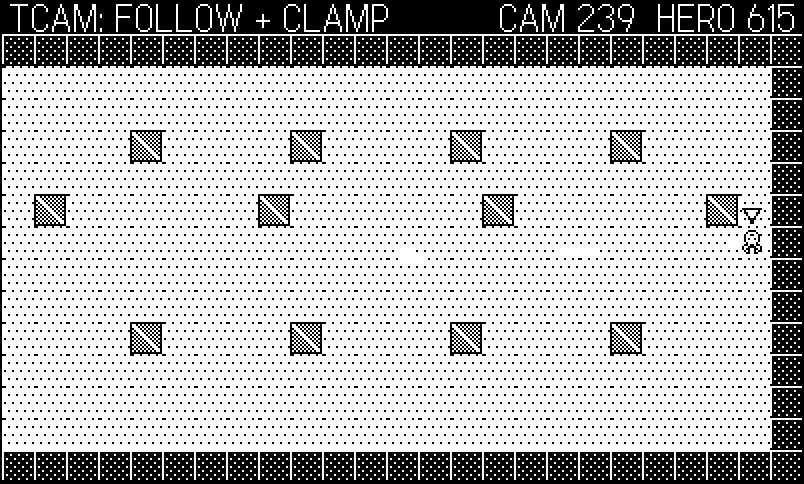
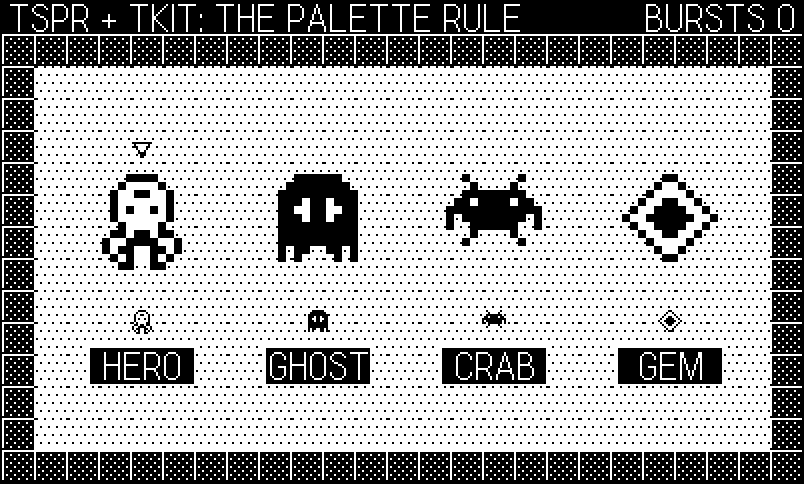
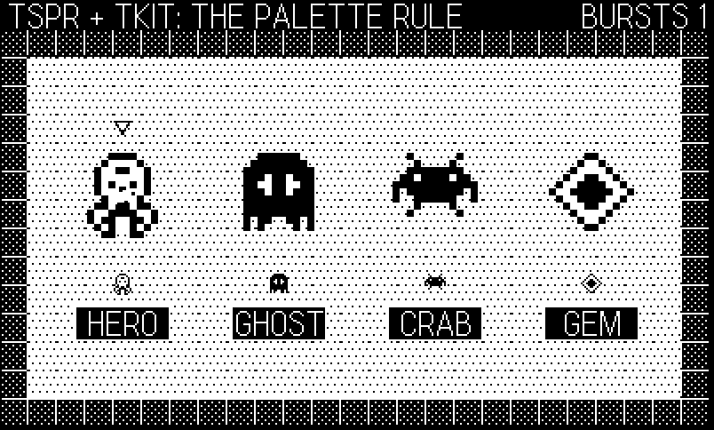

22 Inside Tiles: A Tile-World Engine
Where Phosphor (Chapter 21) answers every question with a line, Tiles answers every question with a character. It is the catalog’s NES/Game Boy engine: a fixed grid of 16×16 tiles, code-drawn tilesets and sprites, and four shipped games — a Bomberman (Blast), a shrine-defense shooter (Spirit), a screen-flip action RPG (Relic), and a scrolling Boulder Dash (Burrow) — on a core of nine files and 772 lines, comments included. There is not one image file in the repository. Every tile is a dither fill plus a string-art overlay, every sprite is rows of '.'/'#'/'o', and every level is an array of strings, one character per tile. That last fact is the design thesis: the character grid is the single source of truth. The same "#" that the renderer paints as a beveled wall is what collision queries test, what enemy pathfinding walks around, what the win condition counts, and what the level is in the source file — legible in a diff, editable in a text editor, validated with an assert on row width.
Two earlier chapters already borrowed this engine where it was the best teacher available: Chapter 7 quoted its camera and its render-once background strategy, and Chapter 14 built its whole collision system as a lightly annotated tphys.lua (Chapter 16 took Phys.bfs too). This chapter is the other side of those visits: the engine as a system — what the modules assume about each other, the cost model that makes a scrolling tile world almost free on this hardware, and the engineering that a post-ship review pass added, which is worth studying precisely because the games were already “done” when it happened. Then a tour of the four games, each with the modules it leans on and the one trick worth stealing.
The example, 22-tiles, is an engine tour in the same format as Chapter 21’s: seven core modules vendored verbatim (each carries a one-line provenance header; the code is otherwise untouched) under a demo that cycles four screens — the scrolling camera with its lag and clamp drawn on screen, a tunnel carved live through solid rock one Map.set at a time, the BFS distance field visualized with a chaser walking down its gradient, and the sprite gallery ending in debris and screen shake. Every core listing below is extracted from the vendored files, so the chapter cannot drift from the code.
22.1 One core, four cartridges
Like Phosphor, Tiles has no framework: the Makefile stages core/*.lua and games/<name>/* into one flat directory and runs pdc on it, so every module imports by bare name and defines one global table — Tiles and Map (tmap), Spr, Phys, Kit, Cam, Snd, Util, Harness. A game’s main.lua starts with import "lib", the one-line shim that pulls the core in dependency order. The example’s version is the same list with the book’s scaffolding in front:
import "CoreLibs/graphics"
import "shots"
import "bookharness"
-- the vendored engine, in core/lib.lua's dependency order
import "tutil"
import "tmap"
import "tspr"
import "tphys"
import "tkit"
import "tcam"
import "tsnd"
-- the demo
import "config"
import "game"
import "input"
import "draw"One module is deliberately missing from that list. The core’s harness.lua is the Chapter 18 smoke module — counters, the pcall error trap, heartbeats, screenshots — and this book’s examples already carry their own (bookharness.lua). Both define a global named Harness, and the core’s main loop (which you will meet as Kit.run below) calls exactly four things on it: Harness.enabled, Harness.set, Harness.frame, and assignment to a couple of fields. The book harness has the same surface — it is the same 47-line pattern grown in the same soil — so the demo does not vendor harness.lua at all and lets Kit.run drive the book’s harness unmodified. When two components meet at a named global, compatibility is a question about the call surface, not the file name; check the calls, then pick one implementation.
The rest of the house rules are the ones this book has used since its first chapters, because they were battle-tested here and in the sibling packages: 400×240 at 30 fps, fixed DT = 1/30, module-per-concern globals, and one input seam. The grid arithmetic adds one more: 16×16 tiles divide the screen into exactly 25×15 cells, and the house layout is a 16-pixel HUD row over a 25×14 playfield. Screen-sized games fill that playfield with one room; Burrow makes the map 40×28 and lets the camera scroll it.
The demo hands its whole runtime to the engine’s own loop:
Kit.run{
init = function()
-- Kit.run seeds from the clock (right for a shipped
-- game); the figure script wants determinism back
if Harness.enabled and Shots and Shots.seed then
math.randomseed(Shots.seed)
end
Game.init()
end,
}Kit.run seeds math.random from the clock before calling init — the right default for a shipped game, and exactly wrong for a figure script that needs deterministic frames — so the demo’s init immediately re-seeds from Shots.seed. Note the order dependency it exposes: Kit.run seeds before init runs, so a game that generates its first level inside init (all four do) gets seeded generation. That guarantee is one of the things the loop extraction bought, and there is a story attached to it at the end of the chapter’s engine half.
22.2 A tileset defined in characters
tmap.lua owns two globals. Tiles is the tileset: a registry from single characters to tile definitions, each baked to a 16×16 image at definition time.
-- Tiles.def("#", { solid = true, kind = "wall", pat = Tiles.PAT.MID,
-- art = { 16 strings of 16 chars } })
-- pat fills the tile; art overlays pixels: '#' black, 'o' white, '.' skip.
-- Extra fields (kind, lethal, ...) ride along on the def for games to
-- query via Map.def().
function Tiles.def(ch, opt)
local S = Tiles.SIZE
local img = gfx.image.new(S, S, gfx.kColorWhite)
gfx.pushContext(img)
gfx.setPattern(opt.pat or Tiles.PAT.WHITE)
gfx.fillRect(0, 0, S, S)
if opt.art then
for y = 1, math.min(#opt.art, S) do
local row = opt.art[y]
for x = 1, math.min(#row, S) do
local c = row:sub(x, x)
if c == "#" then
gfx.setColor(gfx.kColorBlack)
gfx.drawPixel(x - 1, y - 1)
elseif c == "o" then
gfx.setColor(gfx.kColorWhite)
gfx.drawPixel(x - 1, y - 1)
end
end
end
end
gfx.popContext()
local d = {}
for k, v in pairs(opt) do d[k] = v end
d.ch, d.img, d.art, d.pat = ch, img, nil, nil
Tiles.defs[ch] = d
return d
endThree decisions in twenty lines. First, the tile is rendered once, at def time — the pattern fill, the string-art overlay, all of it lands in an image via pushContext, and drawing the tile later is a plain blit. String parsing costs nothing per frame because no string survives to the frame. Second, the def is an open record: solid and kind are conventions, but any extra field — shootthru on Spirit’s ponds, round on Burrow’s boulders, lethal on anything — rides along and comes back from Map.def(tx, ty), so game rules can be data on the tile instead of special cases in code. Third, the last line before registration strips art and pat off the stored def: the strings did their job, and keeping them would make every def query drag a table of sixteen 16-character strings behind it.
The patterns themselves are the Chapter 4 ramp as eight-byte tables — WHITE, LIGHT, MID, DARK, BLACK — and the package’s palette discipline is written in its developer guide after being learned the hard way: LIGHT dithered floors with a single etched dot per tile, DARK walls with a white top bevel, MID for water and crates, white caps on landmarks. The rule exists because its violation shipped first: mid-gray pillars on light floors vanish, and Blast’s indestructible lattice was invisible until the pillars went DARK. On a 1-bit screen, contrast is a budget you allocate, not an effect you add.
22.3 The map is a cache
The second global, Map, is the char grid plus its rendered cache. Map.load(rows) turns an array of strings into Map.grid[y][x] characters (asserting every row has the same width — a hand-authored level row that is one character short otherwise becomes a column of phantom solid cells, because Map.get returns nothing and out-of-bounds counts as solid). Map.build() then renders the whole grid into one background image:
function Map.build()
local S = Tiles.SIZE
Map.bg = gfx.image.new(Map.W * S, Map.H * S, gfx.kColorBlack)
gfx.pushContext(Map.bg)
for y = 1, Map.H do
for x = 1, Map.W do
local d = Tiles.defs[Map.grid[y][x]]
if d then d.img:draw((x - 1) * S, (y - 1) * S) end
end
end
gfx.popContext()
end
function Map.repaint(tx, ty)
local S = Tiles.SIZE
local d = Tiles.defs[Map.grid[ty][tx]]
if not d or not Map.bg then return end
gfx.pushContext(Map.bg)
d.img:draw((tx - 1) * S, (ty - 1) * S)
gfx.popContext()
endThis is the engine’s cost model in ten lines, and it deserves to be stated as arithmetic. Building the image costs one blit per cell — 350 for a screen-sized room, 1,120 for Burrow’s 40×28 cave — paid once, at load. From then on the terrain costs one blit per frame (Map.draw draws Map.bg), no matter how ornate the tiles: a hand-drawn lantern courtyard and a flat gray void render at identical speed. The Simulator measures whole Tiles games at 0.1–1 ms of update-plus-draw against the 33 ms budget; the map blit is where most of that headroom comes from. The alternative — loop over visible cells and draw each tile every frame — is the version Chapter 7 warned you away from, and on this hardware it is the difference between “effectively free” and “most of your frame.”
A cache is only as good as its write barrier, and that is Map.set:
function Map.set(tx, ty, ch)
assert(Tiles.defs[ch], "Map.set: undefined tile char '" .. tostring(ch) .. "'")
if not Map.grid[ty] or not Map.grid[ty][tx] then return end
Map.grid[ty][tx] = ch
if Map.bg then Map.repaint(tx, ty) end
endChange a cell and Map.repaint re-blits exactly that 16×16 square into the background image; the grid and its cache never disagree. The assert at the top is a review-pass addition with a specific failure in mind: pass a character no one registered and, without the assert, the grid updates but repaint finds no def and paints nothing — collision now says one thing and the screen shows another, the exact desynchronization the single-source-of-truth design exists to prevent. When two representations must stay coherent, guard the write, not the reads.
The demo’s second screen leans on the write barrier as hard as Burrow does: the whole playfield is solid crate, and a scripted digger carves a 49-cell tunnel at one cell every two frames, each carve one Map.set, one debris burst, one noise tick (Figure 22.1).
update = function(s, dt)
if s.act and carve.i < #carve.path then
carve.i = carve.i + 1
local c = carve.path[carve.i]
Map.set(c[1], c[2], ".") -- repaints ONE 16px cell
Kit.burst(Game.parts,
Map.cx(c[1]), Map.cy(c[2]), 4, 80)
Snd.play("noise", 500, 0.03, 0.1)
Harness.count("carves")
end
Kit.updateParts(Game.parts, dt)
end,
Map.set calls old, each of which repainted one 16px cell of the background image. The HUD’s cost claim — one background blit per frame — holds no matter how much of the wall has been eaten.
The grid-as-truth pattern is not only for terrain. Burrow’s rocks and gems are not entities — they are tiles, moved by a cellular automaton that calls Map.set twice per falling object per tick (clear the old cell, fill the new one). Two repaints is nothing, the objects inherit collision for free because Map.solid reads the same grid, and there is no entity list to reconcile against the terrain. If a thing lives on cell boundaries and moves in cell steps, ask whether it needs to be an object at all.
22.4 Boxes, corners, and the assist
tphys.lua is the movement half you already know from Chapter 14, which distilled it into that chapter’s example: actors are center-plus-half-extent AABBs, Phys.blocked converts box corners to tile coordinates with the - 0.01 that makes right and bottom edges exclusive (a box flush against a wall touches it but does not occupy it — drop the epsilon and every actor snags on walls it is merely resting against), and Phys.move resolves each axis in 1-pixel substeps:
-- axis-separated 1px-substep move; mutates a.x/a.y, returns hitX, hitY
function Phys.move(a, dx, dy, isSolid)
local hitX, hitY = false, false
local sx = Util.sign(dx)
local rem = math.abs(dx)
while rem > 0 do
local step = math.min(1, rem)
if Phys.blocked(a.x + sx * step, a.y, a.hw, a.hh, isSolid) then
hitX = true
break
end
a.x = a.x + sx * step
rem = rem - step
end
local sy = Util.sign(dy)
rem = math.abs(dy)
while rem > 0 do
local step = math.min(1, rem)
if Phys.blocked(a.x, a.y + sy * step, a.hw, a.hh, isSolid) then
hitY = true
break
end
a.y = a.y + sy * step
rem = rem - step
end
return hitX, hitY
endThe tunneling argument, quantified once here because this engine is where the shipped version lives: consecutive tested positions differ by at most one pixel, and a wall is at least sixteen wide, so there is no gap in the tested path for a wall to hide in — tunneling is impossible by construction, not improbable. The cost is equally bounded: a frame’s displacement is at most \(v_{\max}\,\Delta t\) pixels, each substep tests at most four tiles (an actor smaller than a tile can straddle at most 2×2 of them), so Blast’s fastest boots at 150 px/s cost five substeps and at most twenty tile lookups per frame. Axis separation gives wall-sliding for free, and both hit flags come back to the caller — Relic reads them to bounce skeletons and to notice the player pushing against a locked door.
What this chapter adds is the layer above, the thing that makes grid movement feel right — the corner assist:
-- move with corner assist: when blocked on the move axis but the tile
-- ahead at the actor's center row/column is open, nudge perpendicular
-- toward that row/column center (capped at the move speed, so corners
-- feel smooth, never faster)
function Phys.moveAssist(a, dx, dy, isSolid)
local hitX, hitY = Phys.move(a, dx, dy, isSolid)
local solidFn = isSolid or defaultSolid
-- assist deliberately applies to cardinal input only (dy == 0 / dx == 0)
if hitX and dy == 0 and dx ~= 0 then
local tx, ty = Map.tileAt(a.x, a.y)
if not solidFn(tx + Util.sign(dx), ty) then
local off = Map.cy(ty) - a.y
if off ~= 0 then
Phys.move(a, 0, Util.clamp(off, -math.abs(dx), math.abs(dx)), isSolid)
Phys.move(a, dx, 0, isSolid) -- retry the swallowed forward motion
end
end
elseif hitY and dx == 0 and dy ~= 0 then
local tx, ty = Map.tileAt(a.x, a.y)
if not solidFn(tx, ty + Util.sign(dy)) then
local off = Map.cx(tx) - a.x
if off ~= 0 then
Phys.move(a, Util.clamp(off, -math.abs(dy), math.abs(dy)), 0, isSolid)
Phys.move(a, 0, dy, isSolid) -- retry the swallowed forward motion
end
end
end
return hitX, hitY
endThe situation: the player presses right, but their box is a few pixels above a tile-wide doorway, so Phys.move reports hitX and they grind on the corner. The assist checks the tile ahead of the actor’s center row — not ahead of the box, the box is the thing that is stuck — and if it is open, spends up to this frame’s speed nudging the actor perpendicular, toward the row center. The clamp matters: the nudge is capped at |dx|, so cornering never moves you faster than walking, it just redirects the motion you already had. Every top-down game in the package routes the player through moveAssist; enemies use bare Phys.move because grid-walkers steer cell-center to cell-center and never clip corners.
The two -- retry the swallowed forward motion lines are the review pass at work. The original assist nudged perpendicular and returned — which means that during an assist frame the player’s forward input was consumed by a sideways correction, and approaching a doorway slightly misaligned produced a stutter: slide, stop, then move. The fix re-issues the forward move after the nudge, so a single frame both aligns and advances. It is a one-line change you only find by playing (or by reading with a player’s fingers), and it is why the assist now reads as “the door pulls you in” instead of “the wall lets go of you.”
Note also the comment above the first branch: assist applies to cardinal input only. Diagonal input already slides along walls via axis separation; stacking the assist on top of that produced corner behavior nobody could predict. When a helper’s trigger condition is subtle, write the condition’s intent into a comment at the trigger — the dy == 0 alone does not tell a reader it is policy rather than accident.
22.5 One field, many walkers
The pathfinding third of tphys.lua is three functions that share one data structure, and the sharing is the design. First the field:
-- BFS over walkable tiles from (sx, sy); isOpen(tx, ty) says where you
-- can walk. Returns dist[ty][tx] (nil = unreachable). Shared by enemy
-- chase AI and every autopilot.
function Phys.bfs(sx, sy, isOpen)
local dist = {}
for y = 1, Map.H do dist[y] = {} end
dist[sy][sx] = 0
-- parallel coordinate queues: no per-cell table allocations
local qx, qy, head, tail = { sx }, { sy }, 1, 1
while head <= tail do
local cx, cy = qx[head], qy[head]
head = head + 1
local d = dist[cy][cx] + 1
for i = 1, 4 do
local nx, ny = cx + DIRS[i][1], cy + DIRS[i][2]
if nx >= 1 and nx <= Map.W and ny >= 1 and ny <= Map.H
and dist[ny][nx] == nil and isOpen(nx, ny) then
dist[ny][nx] = d
tail = tail + 1
qx[tail], qy[tail] = nx, ny
end
end
end
return dist
endThis is breadth-first search producing a full distance field: dist[ty][tx] is the length in cells of the shortest walkable path from the source, nil where unreachable. The invariant that makes it correct is the FIFO queue plus unit edge costs: cells leave the queue in non-decreasing distance order, so the first time a cell is assigned is also its final, minimal value — no relaxation, no revisits, every cell enqueued at most once. Cost is \(O(WH)\): at 25×14 that is 350 cells, cheap enough that Blast computes a fresh field per hound decision and its autopilot computes several per frame, and Chapter 16 built its whole chapter on the same routine.
The isOpen parameter is the same move that Chapter 14 praised in Phys.blocked: walkability is the caller’s question. Blast passes “not solid and not a bomb”; Burrow passes “tunnel, dirt, gem, or open exit” — dirt is diggable, so the miner’s field walks through ground that does not exist yet, which is exactly right for a digger. Same field, different physics.
The comment above the queue is another review-pass scar worth reading. The first version enqueued {x, y} tables — one fresh table per visited cell, hundreds per field, for a routine the games call many times a second — a steady drizzle of garbage in the hottest routine the package owns (Chapter 19). The rewrite keeps two parallel coordinate arrays with head and tail indices: same traversal order, byte-for-byte identical fields, zero per-cell allocations. DIRS, hoisted to module scope, finishes the job — the neighbor offsets used to be built inline. The lesson generalizes: in Lua, the shape of your queue is your allocation profile, and a queue of pairs should be two queues of numbers anywhere a collector can hurt you.
Then the two walkers, which read the field in opposite directions:
-- given a field rooted at the WALKER, trace back from a chosen target
-- (tx,ty) to the cell at distance 1 — the walker's first step. Returns
-- nx, ny or nil when already there / unreachable.
function Phys.firstStep(dist, tx, ty)
local d = dist[ty] and dist[ty][tx]
if not d or d == 0 then return nil end
while d > 1 do
local moved = false
for i = 1, 4 do
local nx, ny = tx + DIRS[i][1], ty + DIRS[i][2]
if dist[ny] and dist[ny][nx] == d - 1 then
tx, ty, d = nx, ny, d - 1
moved = true
break
end
end
if not moved then return nil end
end
return tx, ty
end
-- first step from (sx,sy) toward smaller values in a BFS field rooted at
-- the target; returns dx, dy or nil when already there / unreachable
function Phys.descend(dist, sx, sy)
local best = dist[sy] and dist[sy][sx]
if not best then return nil end
local bx, by
for i = 1, 4 do
local nx, ny = sx + DIRS[i][1], sy + DIRS[i][2]
local d = dist[ny] and dist[ny][nx]
if d and d < best then
best, bx, by = d, DIRS[i][1], DIRS[i][2]
end
end
return bx, by
endThe asymmetry is the insight. Phys.descend serves many walkers chasing one target: root the field at the player, and every enemy independently asks “which neighbor of my cell is closer?” — one BFS amortized across the whole pack, each enemy paying four lookups. Phys.firstStep serves one walker choosing among many targets: root the field at the walker, scan candidate destinations (the autopilots score every safe cell on the map), then trace the chosen target back down to distance 1 to recover the walker’s first move. Both directions work because the graph is undirected and unweighted — distance from A to B equals distance from B to A — so you get to put the single BFS wherever it is shared. Blast’s hounds descend; Blast’s, Relic’s, and Burrow’s autopilots pick targets and firstStep home; the demo’s third screen puts a descending chaser on screen and draws the field it is navigating (Figure 22.2).
The chaser re-plans one cell at a time — walk to a cell center, ask descend again — and the field is recomputed only when the player changes cell, which is the natural cache key for grid-rooted data:
update = function(s, dt)
Phys.moveAssist(bfs.p, s.mx * 60 * dt, s.my * 60 * dt)
-- recompute the field only when the player changes cell
local ptx, pty = Phys.cell(bfs.p)
if ptx ~= bfs.ptx or pty ~= bfs.pty then
bfs.ptx, bfs.pty = ptx, pty
bfs.dist = Phys.bfs(ptx, pty, bfsOpen)
Harness.count("fields")
end
-- the chaser walks cell centers, descending the field
local c = bfs.c
if not c.ntx then
local ctx, cty = Map.tileAt(c.x, c.y)
local dx, dy = Phys.descend(bfs.dist, ctx, cty)
if dx then c.ntx, c.nty = ctx + dx, cty + dy end
end
if c.ntx then
local gx, gy = Map.cx(c.ntx), Map.cy(c.nty)
local sp = 110 * dt
c.x = c.x + Util.clamp(gx - c.x, -sp, sp)
c.y = c.y + Util.clamp(gy - c.y, -sp, sp)
if math.abs(gx - c.x) < 0.5
and math.abs(gy - c.y) < 0.5 then
c.ntx = nil
end
end
22.6 The fifty-line camera
tcam.lua runs to 77 lines now, but its scrolling core — the part Chapter 7 already taught — is barely fifty: the setDrawOffset sandwich (Cam.apply … world drawing in world coordinates … Cam.done … HUD in screen space), exponential follow, and the round-at-the-boundary rule that keeps tile seams from shimmering. The two functions that chapter skipped encode the house layout:
local function clampX(x)
local lo = Map.ox
local hi = math.max(lo, Map.ox + Map.W * Tiles.SIZE - 400)
return Util.clamp(x, lo, hi)
end
local function clampY(y)
local lo = Map.oy - 16
local hi = math.max(lo, Map.oy + Map.H * Tiles.SIZE - 240)
return Util.clamp(y, lo, hi)
endCam.x/Cam.y are the world coordinates of the screen’s top-left corner. The X clamp is the standard one: never left of the map, never so far right that the 400-wide viewport hangs past the map’s last column. The Y clamp’s lo = Map.oy - 16 is the HUD row baked into arithmetic: maps load at oy = 16, so a camera pinned at oy - 16 = 0 puts the map’s first row at screen y 16 — exactly below the HUD — and a camera at hi shows the map’s last row at the screen bottom. And the math.max(lo, ...) inside both hi computations is what makes the whole module optional: for a screen-sized map, hi collapses to lo, the clamp pins the camera to a constant, and Cam.follow becomes a no-op. That is why Blast, Spirit, and Relic — single-screen games all — never mention the camera and would not need to change a line if a big-map sequel appeared.
The follow itself is two lines of exponential smoothing per axis with k = min(1, rate * dt), and it has a steady-state you can predict on paper. Chasing a target moving at \(v\) px/s, the error \(e\) settles where the camera’s per-frame gain \(e \cdot k\) equals the target’s per-frame travel \(v\,\Delta t\):
\[ e^\* = \frac{v\,\Delta t}{k} = \frac{v}{\mathrm{rate}} \qquad\text{(for } k = \mathrm{rate}\cdot\Delta t < 1\text{)}. \]
The demo’s first screen walks the hero right at 150 px/s under the default rate of 6, so the camera trails by exactly \(150/6 = 25\) pixels — and the screen draws the evidence: a crosshair on the follow target, a small box at the camera’s center, and the line between them is the lag (Figure 22.3). Sixty frames later the hero reaches the map’s last columns, the clamp pins Cam.x at its maximum, and the same line stretches: the camera has stopped conceding and the hero visibly walks away from center into the screen edge (Figure 22.4). One visualization, both behaviors.


Cam.x at 240 while the hero keeps walking, so the target-to-camera line stretches and the hero presses toward the screen edge — the map never scrolls past its own last column.
The follow has one guard the demo never trips but a bigger game leans on. Cam.slideTo(wx, wy, speed) starts a scripted glide — cutscene pans, Zelda-style room slides — that Kit.run advances through Cam.update each frame, and while it runs Cam.follow early-returns on a sliding flag, so a scripted camera and a following camera never fight over the same two numbers; when the glide arrives it clears the flag and follow resumes. A camera has exactly one owner at a time, and the cheapest way to enforce that is a boolean the other owner checks first.
One more line of Cam.apply earns a note: the offset it sets is Kit.sx - floor(Cam.x + 0.5) — screen shake rides into the camera transform. Shake is a screen-space effect implemented as a world-space jiggle, which means a shaking, scrolling world needs no special case anywhere: Kit.updateShake randomizes the offsets, Cam.apply folds them in, and the HUD (drawn after Cam.done) stays rock steady, which is what a HUD should do while the world convulses. Burrow’s crank-pan is the same trick one layer up: the crank feeds a decaying peekY offset into Cam.follow’s target, so surveying the shaft is just “follow a point that isn’t quite the miner.”
22.7 Sprites that read
tspr.lua is one of the smallest modules, 63 lines, and most of its value is a convention:
function Spr.make(rows)
local h = #rows
local w = #rows[1]
local img = gfx.image.new(w, h) -- transparent
gfx.pushContext(img)
for y = 1, h do
local row = rows[y]
for x = 1, w do
local c = row:sub(x, x)
if c == "#" then
gfx.setColor(gfx.kColorBlack)
gfx.drawPixel(x - 1, y - 1)
elseif c == "o" then
gfx.setColor(gfx.kColorWhite)
gfx.drawPixel(x - 1, y - 1)
end
end
end
gfx.popContext()
return img
endSame string-art idea as the tileset, with a transparent ground: gfx.image.new(w, h) starts fully clear, '#' sets black, 'o' sets white, '.' touches nothing. Spr.draw centers on the actor’s position with a single floor(+0.5) per axis — actors carry float positions from the physics, and rounding here, at the draw boundary, is what Chapter 14 meant by “never round in the physics.”
The convention is the palette rule, and it is the sprite-scale version of the tileset’s contrast budget: the player is white with a black outline; enemies are dark silhouettes with a white eye pixel or two. Both compound sprites survive any background — the white body separates from DARK walls because of its outline, the dark ghost separates from LIGHT floors because of its mass, and the eye keeps it from reading as scenery. The demo’s fourth screen is the rule as a lineup: four sprites at native size and at 4×, on the standard dithered floor (Figure 22.5). On top of it all sits Kit.marker, the bobbing black-outlined chevron every avatar game draws last, after enemies and particles — the bold-player-visibility rule. A player who loses their own avatar for half a second in a crowd blames the game, and they are right to.

Kit.marker, drawn after everything.
22.8 The kit and the loop
tkit.lua is the shared scaffolding: white-on-black HUD text (Kit.text flips the draw mode to kDrawModeFillWhite and back — system-font text is black, and on a mostly-black game screen you want it white), panels, cached big text, title and game-over overlays, the debris pool from Chapter 15 with a 60-particle cap, and screen shake. Two pieces reward a closer look.
The first is ordering. Tile games sort actors by their feet so a character lower on the screen draws in front:
-- run a painter list of {y=, fn=, arg=}; insertion order breaks y ties
-- (table.sort is unstable) so equal-y actors never Z-flicker
function Kit.drawSorted(list)
for i = 1, #list do list[i].seq = list[i].seq or i end
table.sort(list, function(a, b)
if a.y == b.y then return a.seq < b.seq end
return a.y < b.y
end)
for i = 1, #list do
local d = list[i]
d.fn(d.arg)
end
endThe subtlety is the seq stamp. Lua’s table.sort is unstable: two actors standing on the same row can swap draw order between frames, and the result is a one-pixel flicker where their sprites overlap — the kind of bug that is invisible in screenshots and maddening in motion. Stamping insertion order on first sight and using it as the tiebreak makes the sort stable by construction. Note the contrast with Phosphor’s particle pool, which earns swap-remove precisely by being order-independent (Chapter 21): a painter list is the canonical order-dependent list, so it gets a stable sort instead. Know which of the two your list is before you optimize it.
The second is the loop itself, the review pass’s largest single change:
-- Kit.run{ init=, extra=, shotPath= }: the shared main loop. Owns the
-- refresh rate, the random seed, the Harness wiring and the frame counter;
-- per frame it polls input, updates the game and pending callbacks, draws,
-- and folds updMs/drwMs EMAs into the smoke counters.
function Kit.run(opts)
playdate.display.setRefreshRate(SMOKE_BUILD and 0 or 30)
-- smoke runs are SEEDED (make <g>-smoke SEED=n): unpinned smoke
-- passes are not evidence — every run must replay identically
math.randomseed(SMOKE_BUILD and (SMOKE_SEED or 1)
or playdate.getSecondsSinceEpoch())
if opts.init then opts.init() end
if Harness.enabled then
Harness.extra = opts.extra
if playdate.simulator then
Harness.shotPath = opts.shotPath
end
end
local frame = 0
local updMs, drwMs = 0, 0
local function tick()
Input.poll()
playdate.resetElapsedTime()
Game.update(Config.DT)
Util.runPending(Config.DT)
Music.update(Config.DT) -- music + transitions run under
Kit.updateFx(Config.DT) -- every game mode, engine-owned
Cam.update(Config.DT)
updMs = updMs * 0.95 + playdate.getElapsedTime() * 50
playdate.resetElapsedTime()
Draw.frame()
Kit.drawFx()
drwMs = drwMs * 0.95 + playdate.getElapsedTime() * 50
Harness.set("updMs", math.floor(updMs * 10) / 10)
Harness.set("drwMs", math.floor(drwMs * 10) / 10)
end
function playdate.update()
frame = frame + 1
Harness.frame(frame, tick)
end
endBefore the review, all four games carried a hand-rolled copy of this — refresh rate, seeding, Harness wiring, frame counter, the update/draw sandwich, the timing instrumentation — and the copies had drifted, each subtly its own. Extracting Kit.run cut a net 42 lines across seventeen files, which is pleasant but not the point: the point is that the fifth game gets a correct main loop by writing eleven lines of Kit.run{ init = ..., extra = ... }, and a loop bug is now fixed in one place. The instrumentation it standardizes is the cheap kind that answers real questions: updMs/drwMs are exponential moving averages (x = x*0.95 + sample*0.05, the * 50 folding seconds-to-ms into the blend) written into every smoke heartbeat, so a perf regression shows up in a JSON file before anyone feels it (Chapter 19).
The loop has taken on work since the extraction. Alongside the game update it now ticks the engine-owned subsystems a game must never forget — Music.update, Kit.updateFx (dither fades and flashes), and Cam.update (the scripted camera slides above) — and Kit.drawFx paints the transition overlay after Draw.frame, so a fading, shaking, scrolling world needs no bookkeeping in any game mode. The seed is now pinned under smoke (SMOKE_BUILD and (SMOKE_SEED or 1)), because an unseeded verification run replays differently and is not evidence. The tour vendors neither the song player nor tmus.lua, so — exactly as with the harness — it hands Kit.run a one-method Music no-op and lets the shared loop run unmodified.
The review’s headline find was not in the code the games run — it was in the code that watches them. Every Tiles game wires Harness.shotPath so smoke runs save periodic PNGs, and the developer guide’s checklist says, in capitals, LOOK AT THE SCREENSHOTS. The screenshots had never worked. Not once, for any game: the configured path carried a stray tiles/ prefix — the repo’s own directory name, doubled — and playdate.simulator.writeToFile does not error on a path it cannot satisfy; it simply writes nothing. Every counter was green, every heartbeat healthy, all four games “verified” by numbers while the visual half of the verification loop silently produced no artifacts. This is Chapter 18’s blind spot made flesh: counters cannot see the screen, and — one turn crueler — a missing output file is itself a silent failure unless something checks that the file exists. The fix was one path segment; the practice that would have caught it in week one is treating verification artifacts as outputs to verify: if a run is supposed to produce a PNG, the runner should fail loudly when it does not. The book’s own harness inherited exactly that scar — its Makefile writes an absolute SHOT_PREFIX into the build, its figure runner fails a run that produces no shots, and the render fails on a missing figure file.
The demo’s fourth screen exercises the juice half of the kit on cue: a scripted burst at frame 420 sprays debris through Kit.burst, kicks Kit.shake(0.3), and fires Snd.boom (Figure 22.6). Note what the shot proves about layering: the gallery and debris jiggle together (they draw inside Kit.applyShake), while the HUD row and label panels hold still.

Kit.shake’s random jiggle — except the HUD row, drawn after Kit.doneShake, which does not move.
22.9 Sounds and schedules
tsnd.lua is 37 lines because Chapter 12 already did the hard thinking: synth voices, not samples. Its one structural idea is the round-robin pool:
function Snd.play(wave, freq, dur, vol)
local pool = pools[wave]
if not pool then
pool = {}
for i = 1, 3 do pool[i] = snd.synth.new(waves[wave]) end
pools[wave] = pool
idx[wave] = 0
end
idx[wave] = idx[wave] % 3 + 1
pool[idx[wave]]:playNote(freq, vol or 0.25, dur or 0.1)
end
-- descending noise sweep (explosions, deaths)
function Snd.boom(freq, n)
for i = 0, (n or 3) - 1 do
Util.after(i * 0.05, function()
Snd.play("noise", (freq or 220) * (1 - i * 0.2), 0.08, 0.3)
end)
end
endThe problem it solves is the same one Phosphor solved with named dedicated voices: playNote on a synth that is already sounding cuts the previous note dead, and players hear the cut as a bug even when they cannot name it. Tiles’ answer is cheaper and less tailored — three synths per waveform, rotated per call — so any three overlapping effects on one wave coexist and the fourth steals the oldest voice, which is the standard polyphony compromise. Two engines, two answers, one criterion: Phosphor’s soundscape has specific long tails (boom rumble, thrust hiss) worth protecting with dedicated voices; Tiles’ effects are short percussive ticks where “three of anything” is indistinguishable from perfect. Size the solution to the sound design, not to the principle. Snd.boom composes the pool with the scheduler — three descending noise notes, 50 ms apart — which brings us to the last module.
tutil.lua ends with the delayed-call scheduler the whole package sequences itself with — level-clear fanfares, respawn delays, chained explosions:
local pending = {}
function Util.after(delay, fn)
pending[#pending + 1] = { t = delay, fn = fn }
end
function Util.clearPending()
pending = {}
end
function Util.runPending(dt)
-- alias so a callback calling clearPending can't nil out mid-iteration
local list = pending
local n = #list
local w = 0
for i = 1, n do
local p = list[i]
p.t = p.t - dt
if p.t <= 0 then
p.fn() -- fires in registration order; may append past n
else
w = w + 1
list[w] = p
end
end
-- slide anything appended during the scan down over the expired slots
local m = #list
for i = n + 1, m do
w = w + 1
list[w] = list[i]
end
for i = w + 1, m do list[i] = nil end
endTwenty lines, three review-pass guarantees. Callbacks fire in registration order — the old version compacted with table.remove while iterating forward, which could fire same-tick callbacks out of order and skip entries; the rewrite is the classic read-write compaction scan, \(O(n)\) total instead of \(O(n^2)\) under bursts. Callbacks may append — a fanfare scheduling its own next note lands past n and is slid down into the compacted region, surviving to the next tick. And callbacks may clear: the local list = pending alias at the top means a callback calling Util.clearPending() (every game does this on mode reset, so a scheduled death jingle cannot play over a fresh run — Chapter 21’s cabinet has the identical rule) swaps the module’s table without yanking the one mid-iteration. Schedulers are tiny until a callback mutates the schedule; write the three tests — order, append, clear — before trusting one.
22.10 How the four games use it
The engine is half the story; here is what each cartridge did with it, and the one trick each contributes back.
22.10.1 Blast
The Bomberman, and the reference game: moveAssist for the player’s corridor feel, Phys.bfs + descend for the hounds that actually chase (puffs just wander without reversing), Map.set to vaporize crates, Kit debris and shake on every boom, and the crank as a fuse dial — fold the crank angle so up is a hair-trigger and down is a slow burn. Its clever trick is the walkable bomb. A dropped bomb must become solid (that is the genre’s whole tactical grammar) but not instantly, or you are entombed on your own bomb; and “the player left the cell” must mean the player’s box, not the player’s center:
-- tiles/games/blast/game.lua:238
if b.walkable and p then
-- harden once the player's box has cleared the bomb's cell
local ov = math.abs(p.x - Map.cx(b.tx)) < 8 + p.hw
and math.abs(p.y - Map.cy(b.ty)) < 8 + p.hh
if not ov then b.walkable = false end
endThe center-cell version of this check shipped first and froze the player straddling the cell boundary — solid bomb behind, half a body still inside it — and the autopilot self-destructed ninety times before the diagnosis. Anything walkable-until-you-leave must stay passable until the collision shape clears it. Blast is also the package’s best autopilot study: it computes danger sets from live bombs, refuses to drop unless a BFS-reachable safe cell exists within the fuse time, and after its first win goes deliberately reckless to exercise the death and game-over paths in the same smoke run (Chapter 18).
22.10.2 Spirit
The shrine shooter leans on Phys.move (8-way, no assist — open courtyard, no corridors), the spawn-queue wave director, and the tileset’s open records. Its trick is one def field doing the work of a layer system: ponds are solid so nobody walks on water, but shootthru, so talismans and enemy shots sail over:
-- tiles/games/spirit/game.lua:26
-- bullets fly over ponds but stop on walls, lanterns, posts, braziers
local function shotBlocked(x, y)
local tx, ty = Map.tileAt(x, y)
local d = Map.def(tx, ty)
if not d then return true end
return d.solid == true and not d.shootthru
endWalls and lanterns block both movement and shots; ponds block only feet; ghosts, which float, clamp to the arena and ignore solidity entirely. Three movement rules, zero new map structures — just queries composing def fields differently. The crank is a bank: degrees of spin accumulate into a charge that releases as a screen-clearing wand sweep, the mapping for a hand that is busy with the d-pad.
22.10.3 Relic
The Zelda-like is the biggest game (about 1,400 lines) and the core’s stress test: rooms-as-data over Map.load, moveAssist everywhere, Map.set to open key-locked doors permanently (door state, pickups taken, and progress persist through the Chapter 17 datastore on every room transition), and a boomerang that reuses the shootthru water rule. Its structural trick is in world.lua: rooms are 23×12 interior strings, and a loader adds the border with standardized exit gaps — horizontal exits always at rows 7–8, vertical at columns 12–13 — so any two adjacent rooms line up by construction, and an import-time validation pass asserts row widths and that every exit names a real room: typos die in the build, not on the device. Its hard-won runtime lesson lives in the autopilot’s walk primitive:
-- tiles/games/relic/autopilot.lua:237
if ptx == tx and pty == ty then
-- keep pressing toward the cell center: border cells flip the
-- room before the center is ever reached, so stopping at the
-- cell edge would strand us in the transition dead zoneRoom transitions trigger on crossing a threshold past the cell edge; a walker that stops “on arrival” at the border cell stands forever in the dead zone between arrived-by-cell and transitioned-by-pixel. Grid navigation and pixel triggers are two coordinate systems, and every handoff between them needs a rule.
22.10.4 Burrow
The Boulder Dash is the camera’s first customer (40×28 world, Cam.follow on the miner, crank pans to survey the shaft) and the purest expression of grid-as-truth: rocks and gems are tiles, physics is a bottom-up cellular automaton on a fixed tick, and every object movement is two Map.set repaints. Its trick is the rule that makes the whole game fair — the distinction between a rock at rest and a rock in motion, kept in a falling set from the previous tick:
-- tiles/games/burrow/game.lua:249
local onMiner = p.tx == x and p.ty == y + 1
local isFalling = Game.falling[key(x, y)]
if below == "." and (not onMiner or isFalling) then
-- BD rule: the miner's cell counts as occupied, so a
-- resting rock sits on your helmet; only an object
-- that is already falling drops in and killsStand under a resting rock and it sits on your helmet; dig straight down beneath it and it follows you, already falling, and kills. The player-facing physics lesson and the implementation are the same three lines. Burrow’s autopilot inverts them for its reckless mode — after winning once it seeks out a rock, parks underneath, and digs down — and its smoke heartbeat reports the camera’s traveled span (camSpanX/Y), because a scrolling game whose camera never moved is a bug no counter would otherwise catch.
22.11 What you know now
- Tiles is four raster games on a 772-line core: 16×16 tiles, 25×15 screen cells, a 16px HUD row, module-per-concern globals, fixed
DT = 1/30, and no art assets — tiles and sprites are string art baked to images once, at definition time. - The character grid is the single source of truth: rendering, collision, pathfinding, and win conditions all read the same chars, the background image is a cache of the grid, and
Map.setis the write barrier that keeps them coherent (and asserts against desync). Static terrain costs one blit per frame at any complexity; a changed cell costs one 16px repaint. - Movement is Chapter 14’s AABB substep system in its shipped form: right/bottom-exclusive boxes via
- 0.01, axis-separated 1px substeps that make tunneling impossible rather than unlikely, pluggableisSolid, andmoveAssist’s corner nudge — now retrying the forward motion so assist frames don’t swallow input. Phys.bfsproduces a whole distance field per call — FIFO plus unit costs means first assignment is minimal — and two walkers read it in opposite directions:descendfor many chasers on one field,firstStepfor one planner scoring many targets. The review rewrite (parallel coordinate arrays, hoistedDIRS) made the hot path allocation-free without changing a single field value.- The camera is exponential follow with predictable lag (\(v/\mathrm{rate}\)), clamps that encode the HUD row, integer rounding at the draw boundary, and shake folded into the same offset; screen-sized maps collapse the clamp and the module disappears.
- The kit centralizes what every game repeats: stable painter sorting (
table.sortis unstable; stamp and tiebreak), capped debris, shake, the locator chevron — andKit.run, the extracted main loop that seeds beforeinit, wires the harness, and folds EMA timings into every heartbeat. - Round-robin synth pools stop
playNotefrom cutting effects; theUtil.afterscheduler fires in registration order and survives callbacks that append or clear. - And the meta-lesson, sharper here than anywhere: the package’s worst bug was in its verification — screenshots that silently never existed behind green counters. Verification artifacts are outputs; verify them.
The complete engine and all four games are MIT-licensed at github.com/plaidate/tiles — read core/ in an hour, then read Blast against it and watch every module earn its place.